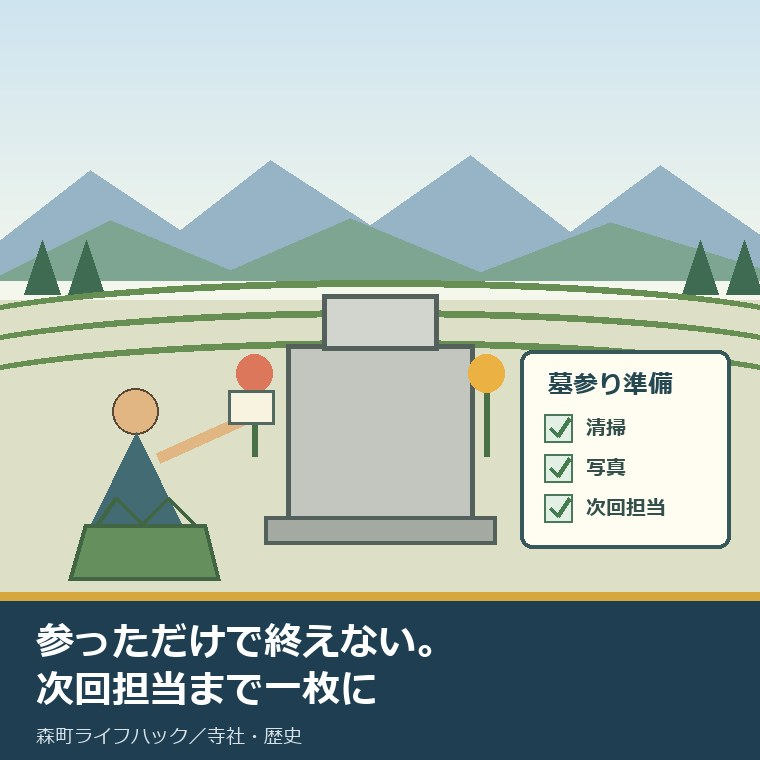
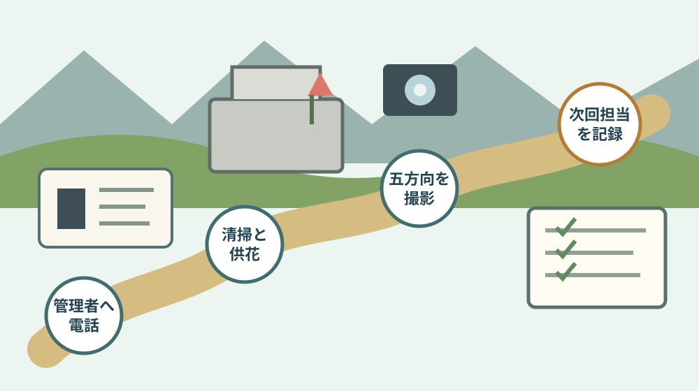

森町の秋彼岸2026｜墓参り準備を1枚に

この記事の要点
Q. 森町の墓へ町外から帰る家族は、2026年の秋彼岸に何を準備すればよいですか。
A. 9月21日から23日の3日を、参る日ではなく役割で分けます。墓地名・使用名義・管理者連絡先・駐車・水場・火気・供花処分を出発前に確認し、清掃、供花、写真、次回担当を1枚へ記録します。22日は祝日ではなく、祝日に挟まれて生じる休日です。
森町にお墓があり、家族は磐田、浜松、静岡県外に分かれて暮らす。秋彼岸は顔をそろえやすい一方、現地で初めて「花は誰が買う」「古い花はどこへ出す」と始まりがちです。
この記事は、墓参りの作法を一つに決めるものではありません。寺院墓地、共同墓地、霊園で違う決まりを、出発前に家族で確認するための記事です。
墓参りを一日で終えたつもりになると、町内にいる人へ次の半年の草取りと連絡が残ります。供花を置く人と、後で片づける人は同じとは限りません。
この言い方は少しきついかもしれません。ただ、今も墓を守る方は、移動、清掃、管理料、寺との連絡をすでに負担しています。町外から行く側は、その負担を最初に数える必要があります。
確認日は2026年9月9日です。国立天文台の暦要項と、森町の改葬許可、ごみ分別、ごみの出し方を確認しました。個別墓地の開門、駐車、水場、火気、供花処分は確認できていません。
結論：2026年は9月21日から23日を役割で分ける
2026年9月21日（月）は敬老の日、22日（火）は祝日法第3条第3項による休日、23日（水）は秋分の日です。国立天文台が2025年2月3日に公表した暦要項で確認できます。
9月22日は、名称のある国民の祝日ではありません。祝日と祝日の間にあるため、法律に基づく休日になります。家族の予定表には「祝日」と書かず、「休日」と書くのが正確です。
公的に確定できるのは、この休日配置と秋分の日です。秋彼岸の法要日、受付、墓地の開門時間は寺院や管理者が決めるため、同じ日程だとは断定できません。
3日とも墓へ行く必要はありません。21日は買い物と管理者確認、22日は清掃、23日は墓参りと家族の記録、という分け方もできます。
遠方から一日だけ戻るなら、前日までに確認を終えます。現地では清掃と墓参りに集中し、帰宅後の連絡担当だけ決めて帰ります。
| 日付 | 暦上の扱い | 家族で置ける役割の例 | 決めつけないこと |
|---|---|---|---|
| 9月21日（月） | 敬老の日 | 管理者へ確認、供花・清掃用具の準備 | 寺院や墓地が開いているとは限らない |
| 9月22日（火） | 法律に基づく休日 | 草取り、墓石周りの清掃、状態撮影 | 名称のある祝日ではない |
| 9月23日（水） | 秋分の日 | 墓参り、家族で次回担当を共有 | 個別の彼岸行事日とは限らない |
出発前の1枚は、場所より先に連絡先を書く
準備表の一番上には、墓地名、区画、墓地使用者の氏名を書きます。「〇〇家の墓」だけでは、管理者へ問い合わせるときに足りない場合があります。
次に、寺院、墓地管理者、親族の連絡先を書きます。誰へ何を聞いたか分かるよう、確認日も添えます。
確認する項目は、開門時間、駐車場所、水場、手桶、清掃道具、火気、供花と古花の扱いです。公式ページで共通の答えは確認できませんでした。
「毎年そうしている」は、今年も同じという根拠にはなりません。鍵、駐車区画、工事、行事で使い方が変わる可能性があります。
墓地へ近い親族へ全部聞くのも避けたいところです。管理者へ聞くことと、親族しか知らないことを分けると、負担が偏りません。
1枚へ書く項目：墓地名／区画／使用名義／管理者電話／確認日／開門／駐車／水場／火気／供花処分／清掃担当／供花担当／写真担当／帰宅後の連絡担当／次回確認日。
持ち物は「使う物」と「持ち帰る物」を対にする
清掃道具は、手袋、柔らかい布、小さなブラシ、ごみ袋を基本にします。墓石の材質に合わない洗剤や硬い道具は、持ち込まない判断も要ります。
供花を持って行くなら、古い供花を入れる袋も用意します。線香を持つなら、火を確実に消す道具と、火気を使えるかの確認も対にします。
草取りをするなら、刈草の行き先まで決めます。現地で袋へ入れた時点では、片づけは終わっていません。
森町の「ごみの出し方」では、可燃ごみに指定袋を使い、町内会名と氏名を書き、指定場所へ午前8時までに出す条件が示されています。
町外から墓参りに来た人が、墓地近くの集積所を使えるとは書かれていません。管理者から明確な案内がなければ、古花や刈草は持ち帰る前提にします。
森町は2026年4月1日の分別変更を受け、家庭ごみ分別ガイドを改訂中です。一宮最終処分場への家庭ごみの直接搬入は、2026年8月31日で終了しました。
以前の持ち込み先を記憶だけで使うと、現地で行き先を失います。2026年度の分別表と管理者の指示を、出発前に照らします。
森町での暮らしへの影響：移動した家族と町内の担い手を分ける
町外に住む家族には、往復時間と交通費があります。町内の家族には、草取り、管理者との連絡、急な倒木や墓石の異変を見る役割が残りやすくなります。
どちらが大変かを競う話ではありません。負担の種類が違うため、同じ「墓守」の一語で済ませないことが出発点です。
秋彼岸に集まれるなら、半年分の作業を振り返れます。誰が何回来たかではなく、清掃、連絡、支払い、移動に分けて書きます。
供花代だけを均等に割っても、現地対応の時間は割れません。町内にいる一人へ判断まで寄せると、連絡を受ける側が休めなくなります。
逆に、遠方の家族が現地作業を毎回担うのも続きません。管理料の振込、用品の手配、写真整理、次回日程の調整は離れていてもできます。
森町の寺院の成り立ちを知りたい方は、森町の寺院を宗派の数と建築から読む記事も確認できます。地域史を知ることと、個別墓地の運用を確認することは別です。
良い点：3日あると、一人に作業を詰め込まずに済む
良い点は、2026年は9月21日から23日まで3日続けて休みを取りやすい配置になったことです。買い物、移動、清掃、墓参りを一日に詰めずに済みます。
高齢の家族がいる場合、清掃する日と墓参りの日を分けられます。雨や体調で動けないときも、予定を一日ずらす余白があります。
家族全員が同じ日に来なくても構いません。最初の人が状態写真を撮り、次の人が不足品を持ち、最後の人が片づけを確認する分担もできます。
写真は、墓石の文字を見せるためだけではありません。正面、左右、背面、足元、水場まで同じ位置から撮れば、次回の変化を比べられます。
古い墓が訪ねられ続ける意味は、森の石松の墓が何度も建て直された経緯を読む記事でも考えています。訪れる人がいることと、支える人の負担は同時に見ます。
注文したい点：休日が増えても、墓守は自動で分担されない
その上で、注文したい点があります。3日の休みを「帰省できる人が全部やる期間」にすると、負担を先送りしただけです。
墓地の案内に、駐車、水場、火気、古花の扱い、緊急連絡先が一枚で示されると、遠方の家族は動きやすくなります。今回は個別墓地の統一案内を確認できませんでした。
町のごみ案内は家庭ごみのルールです。墓地管理のルールと同じとは限りません。この境目を利用者側が勝手に埋めないことが必要です。
私は、彼岸に墓前へ集まること自体を負担だとは思いません。家族が思い出を話す時間にもなります。ただ、思い出の時間へ清掃と処分を隠すと、誰かの作業が見えなくなります。
ここは迷います。役割表を細かくしすぎれば、墓参りが業務のようになります。何も書かなければ、次回も近い人が黙って動きます。
最低限、次に墓を見る人と、その予定月だけは書いて帰る。私はそこまでを、秋彼岸の準備に含めます。

対案・結論：今日、管理者の電話番号を1枚に書く
今日できる小さな一歩は、墓地管理者の電話番号を1枚に書くことです。電話する時間がなければ、番号と情報源だけでも構いません。
次に、家族の連絡欄を作ります。清掃、供花、写真、支払い、帰宅後連絡の五つへ、できる人の名前を一人ずつ置きます。
同じ人が複数を担っても構いません。ただし、空欄を町内の親族が当然に担うものとして扱わないようにします。
現地で確認できなかった項目には、推測を書かず「未確認」と書きます。開門、火気、ごみ、次回行事は、管理者へ聞く担当と期限を添えます。
墓石に傾きや割れが見えたときは、自分で動かしません。写真と場所を管理者へ伝え、石材店など専門の確認へつなぎます。
寺院墓地なら、寺の行事と重なるかも確認します。清掃だけの日、家族で参る日、寺へ相談する日を分けると、話が混ざりません。
今後の墓守は、墓参りの日に結論を出さない
「来年も同じように来られるか」が気になっても、墓前で墓じまいを決める必要はありません。感情と手続きを同じ日に終わらせる話ではないからです。
森町内の遺骨を別の墓地や納骨堂へ移すときは、森町長の改葬許可が必要です。同じ墓地内で移す場合も対象です。
森町公式では、申請に墓地管理者の証明が必要で、許可証の交付まで約1週間、手数料は300円と案内しています。
この手続きは、秋彼岸の清掃とは別です。彼岸に家族で確かめるのは、使用名義、遺骨の数、管理料、寺院・管理者の連絡先までにします。
順番を詳しく知りたい方は、森町で墓じまいを考えるときの改葬許可と寺への伝え方を参照してください。寺への相談と町への申請を逆にしないための記事です。
続ける、負担を外注する、改葬を考える。選択肢は一つではありません。確認した事実が増えれば、今秋に決めない自由も残せます。
家族に残す記録
家族記録には、墓地名、区画、使用名義、管理者、寺院、年間管理料、支払月、領収書の保管場所を書きます。
遺骨の数や氏名は、墓石だけで断定しません。過去帳、埋葬記録、管理者の台帳を照らし、分からない項目は空欄ではなく未確認とします。
写真は撮影日と撮影者を残します。毎回同じ角度が分かるよう、正面、右、左、背面、足元の順も固定します。
清掃記録には、草、落ち葉、供花、線香立て、水鉢、周囲の通路を分けます。傷みを見つけたら、場所と連絡先だけ記録します。
家と墓の管理者が同じ人とは限りません。実家の名義、鍵、固定資産税の通知先も別欄にすると、相続時に話を混ぜずに済みます。
次回欄には、予定月、現地担当、遠方担当、確認事項を書きます。「誰か行ける人」ではなく、一人の名前を仮置きします。
大石の視点
ここからは、大石浩之（磐田市／不動産業）としての意見です。体験ストックに秋彼岸の実話がないため、私が経験した出来事としては書きません。
私は、制度の説明より先に、誰がいつ動くかを一枚へ置くべきだと考えます。墓参りも、供花を買う人だけ決めて終わりではありません。
町の人は、墓地の草取り、寺との連絡、道路や駐車への気遣いをすでに続けています。町外の家族が年一回戻るなら、その努力を軽く見ないことが先です。
一方で、遠方の家族にも移動費と時間があります。現地へ来られない人が、記録、振込、用品手配、日程調整を担えば、負担は分けられます。
彼岸は「行った証拠」を残す日ではなく、次に誰が困るかを減らす日です。私は、墓前の写真より、次回担当の一行を重く見ます。
今年、墓を残すか動かすかを決めなくて構いません。ただ、管理者の番号と使用名義が分かれば、半年後の選択は前へ進みます。
まとめ
2026年9月21日は敬老の日、22日は法律に基づく休日、23日は秋分の日です。22日を国民の祝日と書かず、3日を家族の作業へ分けます。
出発前に、墓地、使用名義、管理者、駐車、水場、火気、ごみを確認します。現地では清掃、供花、写真を分け、帰宅後に次回担当を書きます。
今日の一歩は、管理者の電話番号を1枚へ書くことです。墓守を続けるか迷っても、秋彼岸当日に結論を急がず、事実を一つ増やします。
よくある質問
Q1. 2026年の秋分の日と、その前後の休日はいつですか。
A1. 国立天文台の2026年暦要項では、9月21日（月）が敬老の日、22日（火）が祝日法第3条第3項による休日、23日（水）が秋分の日です。22日は名称のある国民の祝日ではありません。寺院や墓地の彼岸行事、開門、駐車、火気の扱いは管理者へ確認してください。
Q2. 森町へ墓参りする前に、何を1枚へ書けばよいですか。
A2. 墓地名と区画、使用名義、鍵や水場、駐車、火気、古い供花の扱い、持ち物、清掃担当、撮影担当、帰宅後の連絡担当を書きます。管理者の電話番号と確認日も添えます。町外の家族が同じ集積所を使えるとは限らないため、ごみは管理者の指示がなければ持ち帰ります。
Q3. 家族だけで今後の墓守を続けにくいときは、秋彼岸に決めるべきですか。
A3. 秋彼岸当日に墓じまいを決める必要はありません。まず使用名義、遺骨の数、管理料、寺院や墓地管理者の連絡先、次回清掃日を記録します。森町内の遺骨を移す段階では改葬許可が必要です。同一墓地内の移動も対象なので、実行前に管理者と森町へ確認します。
休日、ごみ分別、墓地の運用、手数料は変わる場合があります。個別の墓石安全、改葬、相続、税務は、墓地管理者、寺院、森町の担当窓口、石材・法律・税務などの専門家へ確認してください。
参考にした公式情報
- 令和8（2026）年暦要項の発表／国立天文台（2026年9月21日、22日、23日の暦上の扱いを2026年9月9日に確認）
- 改葬許可について／静岡県森町（対象、墓地管理者の証明、交付期間、手数料を2026年9月9日に確認）
- 令和8年度 家庭ごみ分別表・収集日カレンダー／静岡県森町（2026年度版、分別変更、直接搬入終了を2026年9月9日に確認）
- ごみの出し方／静岡県森町（指定袋、記名、指定場所、午前8時までの条件を2026年9月9日に確認）

磐田市で小さな不動産業を営みながら、森町の空き家・農地・実家じまいのご相談を受けています。地域と不動産実務をつなぐ目線で、確認の順番まで具体的に書きます。
最終確認日：2026-09-09 ／ 本記事は公表情報と執筆者の見解を分けています。個別墓地の開門、駐車、水場、火気、供花処分は確認できていないため、管理者への確認事項として記載しました。